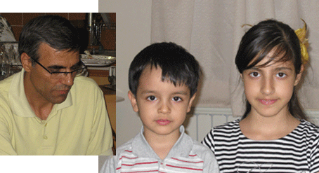

|
|
عطر مریم و یاد نسرین در سالروز جهانی کودک
جمعه16 مهر 1389
تغییر برای برابری - خبر اعتصاب غذای نسرین ستوده بر نگرانی ها افزوده است. او در مکالمه ای کوتاه با همسرش خبر از اعتصاب غذای خود داد. وکیل شجاع جنبش زنان بدون هیچ گونه بهره گیری از حقوق قانونی اش همچنان در بند است. این مدافع فعال کودک و پرتلاش جنبش زنان اکنون به دلیل فعالیت های بشردوستانه اش از دیدار دختر وکودک خردسال خود محروم مانده است.
همزمان با روزجهانی کودک و در پی خبر اعتصاب نسرین ستوده ، برخی از وکلای همکار او در کانون مدافعان حقوق بشر و موکلان او در جنبش زنان و مادران کمپین و مادران پارک لاله به منزل او ورفته و با همسرو فرزندان نسرین ستوده دیدار کردند.
نسرین ستوده بیش از یک ماه پیش به دنبال احضار به دادسرای اوین بازداشت شد. او در این مدت فقط دوباربا خانواده تماس تلفنی داشته که یکبار آن فقط چند ثانیه اجازه ی تلفن داشت و چند جمله فقط توانسته با همسرش صحبت و از اعتصاب غذای خود خبر دهد. او حتی اجازه نیافت که در مراسم ختم پدرش جاضر شود.
دراین دیدار رضا خندان همسر نسرین ضمن اشاره به این که 15 مهرماه روز مصادف با سالگرد ازدواج آنان هم هست نامه ای را خطاب به نسرین نوشته بود که در زیر می خوانید.

بوي عطر مريم
هرسال پانزدهم مهر بوي عطر مريم در خانهمان ميپيچد
در چنين روزي گل مريم سالهاست كه با ماست
امسال اولين باري است كه در سالگرد ازدواجمان كنار هم نيستيم
ولي بيش از هميشه به ياد هم هستيم
و بيش از هميشه به ياد كودكانمان كه فردا روز آنهاست
آنها نيز اولين بار است روز كودك را بدون حضور مادرشان سپري ميكنند
عزيزم روزت مبارك – بچهها روزتان مبارك
به اميد روزهاي شاد باهم بودن